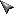
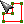
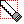
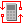

Create zone object.
- open tool dialog
- draw contour of a zone or pick floor face
- adjust zone's settings (number, name, category, height etc)
- apply settings to generate zone object
-  'default' mode
-  'pick face' mode
- 'draw contour' mode
-  'cut opening' mode
- 'get material' mode
Activate each mode by clicking an appropriate command button on a dialog.
Use 'Esc' key to get back from any mode to 'default' one.
Select existing zone while tool is active by single-click, then
- reshape its contour
- change its height interactively
- re-adjust its settings
- cut openings
- ESC, Home = cancel current operation and return to 'default' mode
- Enter =
- apply settings and generate zone when it's ready to be generated
- select zone under cursor in 'default' mode
- confirm face picking in 'pick face' mode
- Del = deletes last entered vertex of a zone contour or last segment of an opening in 'draw contour' or 'cut opening' modes
- End = finish drawing a contour of a zone or contour of an opening
- Tab = toggle zone's geometry information visibility, while tool is active
- Ins = insert new node in zone's contour, while cursor is over center of a segment
- Shift = lock inference while 'draw contour' or 'cut opening' mode is active
-  'Recalculate' calculated attributes
 'Rebuild' zone object(s)
'Rebuild' zone object(s)- 'View/Edit Properties' of selected zones
'Default' mode is for selecting existing zone objects. It is possible to reshape and re-adjust properties of selected zone.
'Pick Face' mode is for picking any face, that represents a contour of a floor, in an active model instead of drawing zone's contour vertex-by-vertex.
'Draw Contour' mode allows entering zone contour vertex-by-vertex.
'Cut Opening' mode becomes available after selecting an existing zone. Use it to draw openings inside selected zone.
'Get Material' mode helps to obtain material directly from any object in an active model instead of choosing it from a drop-down list.
Each mode of 'Zone Tool' has its own context pop-up menu.
It is possible to edit generated zone group and its contents as well manually using native SketchUp tools any time later after its creation.
It is possible to move/copy zone object or reshape elements inside zone group either.
But in order to keep zone's calculated attributes actual it is necessary to refresh calculated attributes after editing zone object
and/or its contents.
That's why it is necessary to use 'Recalculate' or
'Rebuild' commands
after editing zone object.